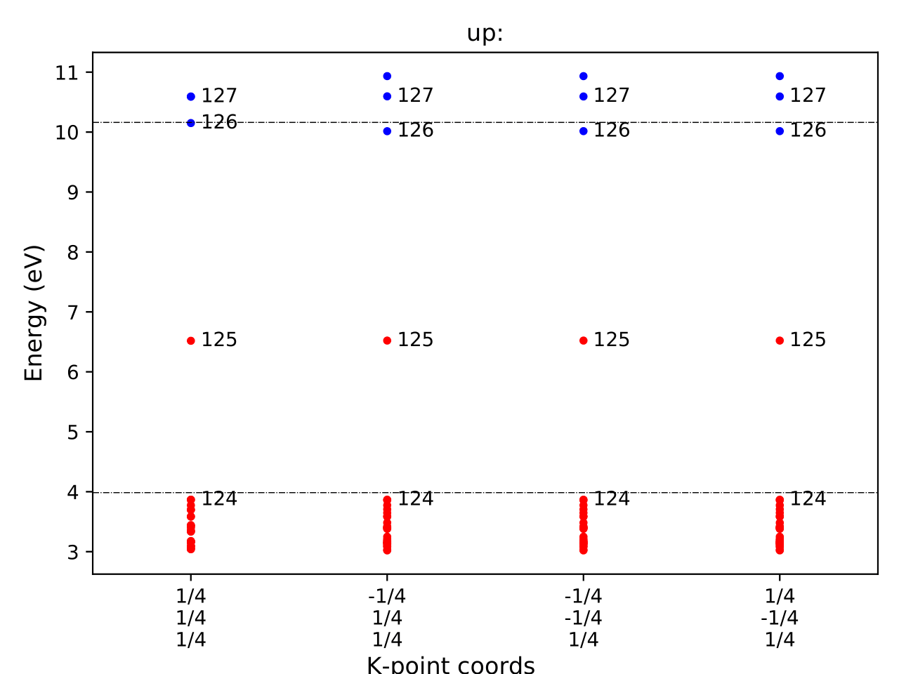

Tutorial for calculation of vertical transition level¶
Here, we illustrate how to calculate the vertical transition level (VTL) using the example of an oxygen vacancy in MgAl₂O₄. To calculate the VTL, we apply a specific correction scheme, here referred to as the GKFO correction. For further details, please refer to:
T. Gake, Y. Kumagai*, C. Freysoldt, and F. Oba, Phys. Rev. B, 101, 020102(R) (2020)
We assume that defect calculations for MgAl₂O₄ using the PBEsol functional have already been performed as introduced in the tutorial, and we now aim to compute the photo-absorption energy corresponding to the excitation of a localized state associated with a neutral oxygen vacancy to the CBM.
The following directory structure is assumed:
MgAl2O4
│
├ unitcell/ ── unitcell.json
│
└ defects/ ── perfect/
└ Va_O1_0/ ── absorption/
First, create the absorption/ directory inside Va_O1_0/
and copy the VASP input files from Va_O1_0/.
Then, edit the INCAR file by setting NSW = 1 and reducing the
NELECT value by 1 from the neutral state.
Alternatively, use the following command:
vise vs -uis NSW 1 --options charge 1 -d ../ -t defect
After running VASP, generate calc_results.json
within the absorption/ directory by executing:
pydefect cr -d .
Then, generate the gkfo_correction.pdf and gkfo_correction.json
files using the following command:
pydefect_util gkfo -u ../../../unitcell/unitcell.yaml -iefnv ../correction.json -icr ../calc_results.json -fcr calc_results.json -cd 1
You can check the correction energy using the pydefect_print command,
which yields output like the following:
+--------------------+------------+
| charge | 0 |
| additional charge | 1 |
| pc 1st term | 0 |
| pc 2nd term | 0.819326 |
| alignment 1st term | -0.0953654 |
| alignment 2nd term | -0.10711 |
| alignment 3rd term | -0 |
| correction energy | 0.61685 |
+--------------------+------------+
The gkfo_correction.pdf shows the potential profile
resulting from the addition/removal of an electron,
along with its alignment contributions.

To compute the absorption energy, we need the conduction band minimum (CBM), which is 9.2376 eV for MgAl₂O₄. Assuming the total energies of the initial and final states are -405.739 eV and -411.920 eV, respectively, the absorption energy is computed as:
-411.920 + 405.739 + 9.2376 + 0.61685 = 3.67345 eV
It is also informative to inspect the eigenvalues of the initial and final states.
You can visualize these using eigenvalues.pdf, which appear as:
And for the initial state:
